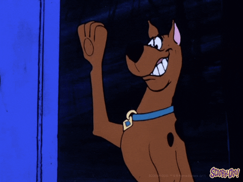

Scooby-Doo

Scooby-Doo, il cui nome completo è Scoobert Doo, è un grande alano marrone con macchie nere, noto per essere affettuoso,
leale e molto pauroso. Indossa un collare blu con una targhetta a forma di rombo con le sue iniziali "SD".
È il migliore amico di Shaggy Rogers e insieme formano un duo inseparabile, condividendo una forte passione per
il cibo e una grande codardia. Nonostante la sua paura, Scooby-Doo è spesso al centro delle indagini della "Mystery Inc.", aiutando a risolvere
misteri legati a eventi soprannaturali. Ha una capacità limitata di parlare, con una voce distintiva e divertente.
La sua personalità comica e il suo rapporto con gli altri membri del gruppo rendono Scooby-Doo un personaggio iconico
e amato nel panorama dell'animazione.
H O M E